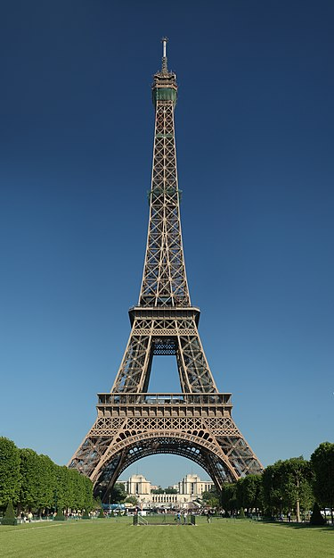
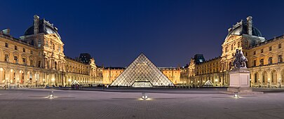
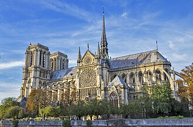
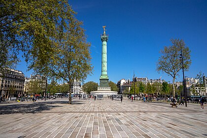

The City of Lights
Paris, the capital of France, is known for its cafes, museums, and romantic atmosphere.
Best Places to Visit in Paris:
-
Eiffel Tower

Locally nicknamed "La dame de fer" (French for "Iron Lady"), it was constructed as the centerpiece of the 1889 World's Fair.
-
Louvre Museum

The building was redesigned many times to form the present Louvre Palace. In 1682, Louis XIV moved his household to Versailles.
-
Notre-Dame Cathedral

The construction of the cathedral began in 1163 and was largely completed by 1260, though it was modified over time.
-
Place de la Bastille

It was built in 1889 as a symbol of the French Revolution and is now a UNESCO World Heritage Site.